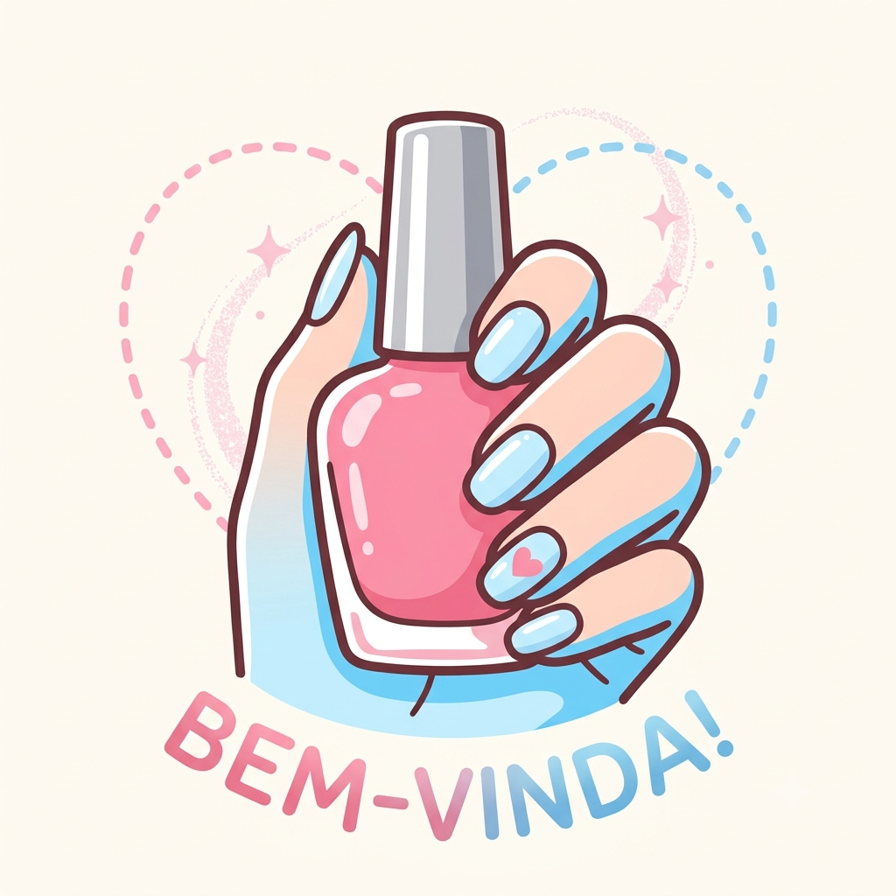

Boas-vindas ao meu Blog de Unhas!
Por: Luana Sofia Leonel Silveira da Luz
Seja muito bem-vinda! Aqui vou compartilhar as melhores dicas sobre cuidados, formatos e decorações de unhas.
Dicas, tendências e cuidados para unhas incríveis!

Por: Luana Sofia Leonel Silveira da Luz
Seja muito bem-vinda! Aqui vou compartilhar as melhores dicas sobre cuidados, formatos e decorações de unhas.

Por: Luana Sofia Leonel Silveira da Luz
Usar óleo de cutícula diariamente evita o ressecamento e ajuda as unhas a crescerem muito mais saudáveis e resistentes.
Fonte: Dicas de Manicure

Por: Luana Sofia Leonel Silveira da Luz
A clássica francesinha ganhou uma versão moderna! As pontinhas coloridas, especialmente em tons pastel como azul-bebê, estão super em alta.
Fonte: Revista Tendências

Por: Luana Sofia Leonel Silveira da Luz
Seja quadrada, amendoada ou bailarina, cada formato combina com um estilo de vida diferente. O formato amendoado quebra bem menos!
Fonte: Guia da Beleza

Por: Luana Sofia Leonel Silveira da Luz
A esmaltação em gel dura até três semanas sem descascar e mantém o brilho impecável. É perfeita para quem não tem tempo de fazer a unha toda semana.
Fonte: Blog Nails

Por: Luana Sofia Leonel Silveira da Luz
Pequenos pontos, linhas finas e corações simples deixam as mãos delicadas e elegantes sem precisar de designs super complexos.
Fonte: Inspirações do Pinterest